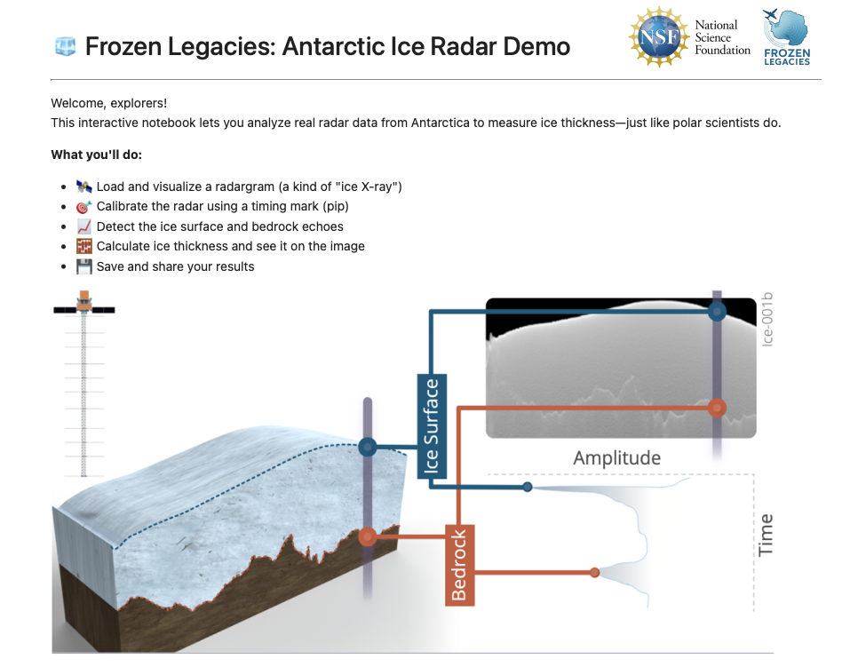

Code Demos
Interact with real scientific data and learn how researchers study ice shelves.
Experience real polar science with a hands-on, beginner-friendly coding activity.
Designed for students and educators—no prior coding experience needed!
Step 1: Try the Demo:
Open in Colab
Step 2: Download the Notebook:
Download from GitHub

This demo is designed to help you build real-world science and coding skills. You will:
- 🔍 Load and visualize Z-scope radar data
- 🧊 Identify the ice surface and bed echoes in radar images
- 📊 Interpret radargrams and understand ice thickness and structure
- 💻 Use Python code to analyze real scientific data
Follow these steps to get started with the notebook:
- Open the Notebook: Use the Google Colab link above or download the notebook from GitHub.
- Run the Cells: Click on each cell and press “Run” to execute the code and see the results.
- Explore the Data: Follow the instructions in the notebook to visualize radar echograms and experiment with the data.
- Learn and Adapt: Modify the code to see how changes affect the results, and try answering the questions included in the notebook.
Did you know?
- 📡 Radargram: A radar image showing subsurface reflections.
- 🌊 Echogram: Another term for a radargram, often used in marine or ice studies.
- 🖼️ Z-Scope: A type of 2D radar image that shows signal strength over time or depth.
- 📈 A-Scope: A 1D depth profile that shows signal strength over time or depth.
The code for processing and analyzing Z-scope and A-scope radar data is available on GitHub:
- Z_Scope_Processing: Python code for semi-automatically picking surface and bed features in Z-scope radar film.
- A_Scope_Processing: MATLAB code for semi-automatically picking main bang, surface echo, and bed echo in A-scope film.
Join a growing community of educators and students exploring real polar science. Interested in using this demo in your classroom or research? We’d love to hear from you!
Contact Us
Tip for Educators: This demo is perfect for introducing students to real-world data science and polar research. The interactive nature of Jupyter Notebooks allows students to experiment with data and see immediate results, making learning engaging and hands-on.